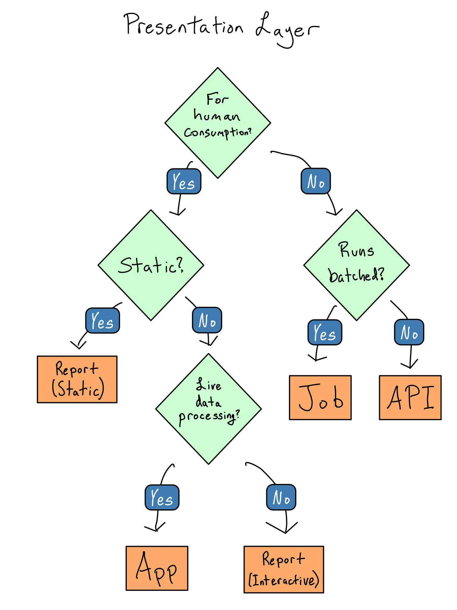

b = pins.board_folder('data/model', allow_pickle_read=True)
v = VetiverModel.from_pin(b, 'penguin_model')2 Data Project Architecture
As a data scientist, you’re also a software developer, like it or not. But you’re probably not a very good software developer. I know I’m not.
For the most part, being a mediocre software developer is fine. Maybe your code is a little inefficient, but it’s not big deal. The exception is that poorly-architected software is likely to break when shared for collaboration or put into production.
So in this chapter, I’ll share some guidelines about how to design your data science project so it won’t fall apart or have to be rebuilt when you take it to production.
Before we get into designing a data science project, let’s talk about a standard software architecture that’s also helpful for data science projects – the three-layer app.
A three-layer app is divided into (you guessed it) three layers, which are:
- Presentation Layer - what the end users of the app directly interact with. It’s the displays, buttons, and functionality the user experiences.
- Processing Layer – the processing that happens as a result of user interactions. Sometimes called the business logic.
- Data Layer – how and where the app stores and retrieves data.
Note
You may also have heard the terms front end and back end. Front end usually refers to the presentation layer and back end to the processing and data layers.
Thinking about these three layers can help clarify the parts of your project, but a data science project is different enough from general purpose software that you can’t just take three-layer best practices and graft them onto a data science project.
First, you may not be designing an app at all. Data science projects produce all kinds of different outputs. An app is one option, but maybe you’re creating a report, API, book, or paper.
Second, you’re designing a project, which is often not just an app. It’s very likely that you have, or should have, several different components like one or more ETL or modeling scripts.
Third, most general purpose apps run in response to something users do. In contrast, many data science projects run in response to updates to the underlying data – either on a schedule or in response to a trigger.
Lastly, general purpose software engineers usually get to design their data layers. You probably don’t. Your job is to extract meaning from a bunch of raw input data, which means you’re beholden to whatever format that data shows up in.
Even with these differences, you need to make choices that, if made well, can make your app easier to take to production. Here’s are some guidelines I’ve found make going to production easier.
2.1 Choose the right presentation layer
The presentation layer is the thing that will be consumed by your users. You need to start by figuring out the details of your presentation layer because a lot of the data flows for your project will be dictated by your presentation layer choices.
Basically all data science projects fall into the following categories.
A job. A job matters because it changes something in another system. It might move data around, build a model, or produce plots, graphs, or numbers to be used in a Microsoft Office report.
Frequently, jobs are written in a SQL-based pipelining tool (dbt has been quickly rising in popularity) or in a
.Ror.pyscript.1 Depending on your organization, the people who write jobs in your organization may be called data engineers.An app. Data science apps are created in frameworks like Shiny (R or Python), Dash (Python), or Streamlit (Python). In contrast to general purpose web apps, which are for all sorts of purposes, data science web apps are usually used to give non-coders a way to explore data sets and see data insights.
A report. Reports are code you’re turning into an output you care about – like a paper, book, presentation, or website. Reports are the result of rendering an R Markdown doc, Quarto doc, or Jupyter Notebook for people to consume on their computer, in print, or in a presentation. These docs may be completely static (this book is a Quarto doc) or they may have some interactive elements.2
An API (application programming interface). An API is for machine-to-machine communication. In general purpose software, APIs are the backbone of how two distinct pieces of software communicate. In the data science world, APIs are most often used to provide data feeds and on-demand predictions from machine learning models.
Choosing the right type of presentation layer will make it much easier to design the rest of your project. Here are some guidelines on how to choose which to use.
If the results of your software are for machine-to-machine use, you’re thinking about a job or API. You should create a job if it runs in a batched way, i.e. you write a data file or results into a database. If you want results to be queried in real-time, it’s an API.
If your project is for humans to consume, you’re thinking about creating an app or report. Reports are great if you don’t need to do data processing that depends on user input and apps are great if you do.
This flow chart illustrates how I think about which of the four things to build.

2.2 Do less in the presentation layer
Data scientists usually don’t do a great job separating out their presentation layers. It’s not uncommon to see apps or reports that are thousands of lines of code, with UI components, code for plots, and data cleaning all mixed up together. These smushed up layers make it really hard to reason about the code or to add testing to logging.
The only code that belongs in the presentation layer is code that shows something to the user or that collects input from the user. Creating the things that are shown to the user or doing anything with the interactions shouldn’t be in the presentation layer. These should be deferred to the processing layer.
Once you’ve identified what belongs in the processing layer, you should extract the code into functions that can be put in a package for easy documentation and testing and create scripts that do the processing.
Tip
Moving things out of the presentation layer is especially important if you’re writing a Shiny app. You really want to use the presentation layer to do reactive things and move all non-reactive interactions into the processing layer.
2.3 Small data in the presentation layer
Everything is easy when your data is small. You can simply load it into your Python or R session as your code starts and never think about it again.
“Real engineers” may scoff at this pattern, but don’t let their criticism dissuade you. If your data size is small and your project performance is good enough, just read in all of your data and operate on it. Don’t over-complicate things. These days, this pattern often works well into the range of millions of rows.
It may be the case that your data isn’t small – but not all large data is created equal.
Truly big data can’t fit into the memory on your computer all at once. As computer memory gets more plentiful, truly big data is getting rarer.
It’s much more common to encounter medium data. You can technically load it into memory, but it’s substantial enough that loading it all makes your project’s performance too slow.
Dealing with medium or big data requires being somewhat clever and adopting a design pattern appropriate for big data (more on that in a bit). But being clever is hard.
Before you go ahead being clever, it’s worth asking a few questions that might let you treat your data as small.
2.3.1 Can you pre-calculate anything?
If your data is truly big, it’s big. But if your data is medium-sized, the thing keeping it from being small isn’t some esoteric hardware issue, its performance.
An app requires high performance. Someone staring at their screen through a 90-second wait may think your project stinks depending on expectations.
But if you can pre-calculate a lookup table of values or turn your app into a report that gets re-rendered on a schedule, you can turn large data into a small data set in the presentation layer.
Talking to your users and figuring out what cuts of the data they really care about can help you determine whether pre-calculation is feasible or whether you really need to load all the data into the presentation layer.
2.3.2 Can you reduce data granularity?
If you can pre-calculate results and you’re still hitting performance issues, it’s always worth asking if your data can get smaller.
Let’s think about a specific project to make this a little clearer.
Suppose you work for a large retailer and are responsible for creating a dashboard of weekly sales. Your input data is a dataset of every item sold at every store going back for years. Clearly this isn’t naturally small data.
But you might be able to make the data small if you don’t need to allow the user to slice the data in too many different dimensions. Each additional dimension you allow multiplies the amount of data you need in the presentation layer.
For example, weekly sales at the department level only requires a lookup table as big as \(\text{number of weeks} * \text{number of stores} * \text{number of departments}\). Even with a lot of stores and a lot of departments, you’re probably still squarely in the small data category.
But if you have to switch to a daily view, you multiply the amount of data you need by 7. If you break it out across 12 products, your data has to get 12 times bigger. And if you do both, it gets 84 times bigger. It’s not long before you’re back to a big data problem.
Talking with your users about the tradeoffs between app performance and the number of data dimensions they need can identify opportunities to exclude dimensions and reduce your data size.
2.4 Make big data small
The way to make big data small is to avoid pulling all the data into your Python or R session. Instead, you want to pull in only some of the data.
There are a few different ways you can avoid pulling all the data. This isn’t an exhaustive list and each of these patterns will only work for some projects, but adopting one or more can be helpful.
2.4.1 Push work to the data source
In most cases, the most time-consuming step is transmitting the data from the data source to your project. So, as a general rule, you should do anything you can do before you pull the data out.
This tends to work quite well when you’re creating simple summary statistics and when your database is reasonably fast. If your data source is slow or if you’re doing complicated machine learning tasks on a database that only supports SQL, it may not be possible.
2.4.2 Be lazy with data pulls
As you’re pushing more work into the database, it’s also worth considering when the project actually pulls its data during its runtime. The most basic pattern is to include the data pull in the project setup in an eager pattern. This is often a good first cut at writing an app, as it’s much simpler than doing anything else.
If that turns out to be too slow, consider being lazy with your data pulls. In a lazy data pattern, you have a live connection to your data source and pull in only the data that’s needed when it’s needed.
If you don’t always need all the data, especially if needs depend on what the user does inside a session, it might be worthwhile to pull only once the user interactions clarify what you need.
2.4.3 Sample the data
For many tasks, especially machine learning ones, it may be adequate to work on only a sample of the data. In some cases, like classification of highly imbalanced classes, it may actually work better to work on a sample of the data rather than the whole data set.
Sampling tends to work well when you’re trying to compute statistical attributes of your datasets. Computing averages or rates and creating machine learning models works just fine on samples of your data. Be careful to consider the statistical implications of sampling, especially remaining unbiased. You may also want to consider stratifying your sampling to ensure good representation across important dimensions.
Sampling doesn’t work well on counting tasks. It’s hard to count when you don’t have all the data!
2.4.4 Chunk and pull
In some cases, there may be natural groups in your data. For example, in our retail dashboard example, it may be the case that we want to compute something by time frame or store or product. In this case, you could pull just that chunk of the data, compute what you need and move on to the next one.
Chunking works well for all kinds of tasks including building machine learning models and creating plots. The big requirement is that the groups are cleanly separable. When they are, this is an example of an embarrassingly parallel task, which you can easily parallelize in Python or R.
If you don’t have distinct chunks in your data, it’s pretty hard to chunk the data.
2.5 Choose location by update frequency
Where you store your data should be dictated by how often the data is updated.
The simplest answer is to put it in the presentation bundle, which is the code and assets that make up your presentation layer. For example, let’s say you’re building a simple Dash app, app.py.
You could create a project structure like this:
my-project/
├─ app.py
├─ data/
│ ├─ my_data.csv
│ ├─ my_model.pklThis works well only if your data will be updated at the same cadence as the app or report itself. If your project is an annual report that will be rewritten when you update the data, this works well.
But if your data updates more frequently than your project code, you really want to put the data outside the project bundle.
2.5.1 Filesystem
There are a few ways you can do this. The most basic is to put the data on a location in your file system that isn’t inside the app bundle.
But when it comes to deployment, data on the file system can be complicated. If you’re writing and deploying your project it on the same server, then you can access the same directory. If not, you’ll need to worry about how to make sure that directory is also accessible on the server where you’re deploying your project.
2.5.2 Blob Storage or Pins
If you’re not going to store the flat file on the filesystem and you’re in the cloud, it’s most common to use blob storage. Blob storage allows you to store and recall things by name.3 Each of the major cloud providers has blob storage – AWS’s has s3 (short for simple storage service), Azure has Azure Blob Store, and Google has Google Storage.
The nice thing about blob storage is that it can be accessed from anywhere that has access to the cloud. You can also control access using standard cloud identity management tooling.
There are packages in both R and Python for interacting with AWS that are very commonly used for getting access to s3 – {boto3} in Python and {paws} in R.
There’s also the popular {pins} package in both R and Python that basically wraps using blob storage into neater code. It can use a variety of storage backends, including cloud blob storage, networked or cloud drives like Dropbox, Microsoft365 sites, and Posit Connect.
2.5.3 Google Sheets
If you’re still early in your project lifecycle, a Google Sheet can be a great way to save and recall a flat file. I wouldn’t recommend a Google Sheet as a permanent home for data, but it can be a good intermediate step while you’re still figuring out what the right answer is for your pipeline.
The primary weakness of a Google Sheet – that it’s editable by someone who logs in – can also be an asset if that’s something you need.
2.6 Store intermediate artifacts in the right format
As you break your processing layer into components, you’ll probably have intermediate artifacts like analysis datasets, models, and lookup tables to pass from one stage to the next.
If you’re producing rectangular data frames (or vectors) and you have write access to a database, use that.
But very often you don’t have write access to a database or you’ve got other sorts of artifacts that you need to save between steps and can’t go into a database, like machine learning models or rendered plots. In that case, you’ll need to choose how to store your data.
2.6.1 Flat files
Flat files are data files that can be moved around just like any other file on your computer.
2.6.2 CSV
The most common is a comma separated value (csv) file, which is just a literal text file of the values in your data with commas as separators.4 You could open it in a text editor and read it if you wanted to.
The advantage of .csvs is that they’re completely ubiquitous. Every programming language has some way to read in a .csv file and work with it.
On the downside, .csvs are completely uncompressed. That makes them quite large relative to other sorts of files and slow to read and write. Additionally, because .csvs aren’t language-specific, complicated data types may not be preserved when saving to .csv. For example, dates are often mangled going into a .csv file and back.
They also can only hold rectangular data, so if you’re trying to save a machine learning model, a .csv doesn’t make any sense.
2.6.3 Pickle or RDS
Both R and Python have language-specific flat file types – pickle in Python and rds in R. These are nice because they include some amount of compression and preserve data types when you save a data frame. They also can hold non-rectangular data, which can be great if you want to save a machine learning model.
2.6.4 DuckDB
If you don’t have a database but are storing rectangular data, you should strongly consider using DuckDB. Its an in-memory database that’s great for analytics use cases. In contrast to a standard database that runs its own live process, there’s no overhead for setting up DuckDB.
You just run it against flat files on disk (usually Parquet files), which you can move around like any other. And unlike a .csv, pickle, or rds file, a DuckDB is query-able, so you only load the data you need into memory.
It’s hard to stress how cool DuckDB is. Data sets that were big just a few years ago are now medium or even small.5
2.7 Consider data auth up front
If everyone who views your project has the same permissions to see the data, life is easy. You can just allow the project access to the data and check for authorization to view the project.
But if you need to provide different data access to different users, you’re much more constrained. First off, you probably need to use an app rather than a report so that you can respond to which user is accessing the app.
Sometimes you can adjust data access in the app itself. Many app frameworks pass the username or user groups into the session, and you can write code that changes app behavior based on the user. For example, you can gate access to certain tabs or features of your app based on the user.
Sometimes you’ll need to pass database credentials along to the database. If this is the case for you, you’ll need to figure out how to establish the user’s database credentials, how to make sure those credentials stay only in the user’s session, and how those credentials get passed along to the database. More on this topic in Chapter 16.
2.8 Create an API if you need it
In the case of a general purpose three-layer app, it is almost always the case that the middle tier will be an API. In a data science app, separating processing logic into functions is often sufficient. But if you’ve got a long-running bit of business logic, like training an ML model, it’s often helpful to separate it into an API.
Note
You may have heard the term REST API or REST-ful.
REST is a set of architectural standards for how to build an API. An API that conforms to those standards is called REST-ful or a REST API.
If you’re using standard methods for constructing an API like R’s {plumber} package or {FastAPI} in Python, they’re going to be REST-ful – or at least close enough for standard usage.
You can think of an API as a “function as a service”. That is, an API is just one or more functions, but instead of being called within the same process that your app is running or your report is processing, it will run in a completely separate process.
For example, let’s say you’ve got an app that allows users to feed in input data and then generate a model based on that data. If you generate the model inside the app, the user will have the experience of pressing the button to generate the model and having the app seize up on them while they’re waiting. Moreover, other users of the app will find themselves affected by this behavior.
If, instead, the button in the app ships the long-running process to a separate API, it gives you the ability to think about scaling out the presentation layer separate from the business layer.
Luckily, if you’ve written functions for your app, turning them into an API is trivial since packages like {fastAPI} and {plumber} let you turn a function into an API with just the addition of some specially-formatted comments.
2.9 Write a data flow chart
Once you’ve figured out the project architecture you need, it can be helpful to write a data flow chart.
A data flow chart maps the different project components you’ve got into the three parts of the project and documents all the intermediate artifacts you’re creating along the way.
Once you’ve mapped your project, figuring out where the data should live and in what format will be much simpler.
For example, here’s a very simple data flow chart for the labs in this book. You may want to annotate your data flow charts with other attributes like data types, update frequencies, and where data objects live.

2.10 Comprehension Questions
- What are the layers of a three-layer application architecture? What libraries could you use to implement a three-layer architecture in R or Python?
- What are some questions you should explore to reduce the data requirements for your project?
- What are some patterns you can use to make big data smaller?
- Where can you put intermediate artifacts in a data science project?
- What does it mean to “take data out of the bundle”?
2.11 Lab 2: Build the processing layer
In Chapter 1, we did some EDA of the Palmer Penguins data set and also built an ML model. In this lab, we’re going to take that work we did and turn it into the actual presentation layer for our project.
2.11.1 Step 1: Write the model outside the bundle
When we originally wrote our model.qmd script, we didn’t save the model at all.
It seems likely that our model will get updated more frequently than our app, so we don’t want to store it in the app bundle. Later in the book, I’ll show you how to store it in the cloud. For now, I’m just going to store it in a directory on my computer.
I’m going to use the {vetiver} package, which is an R and Python package to version, deploy, and monitor a machine learning model.
We can take our existing model, turn it into a {vetiver} model, and save it to the /data/model folder with
model.qmd
```{python}
from vetiver import VetiverModel
v = VetiverModel(model, model_name='penguin_model', prototype_data=X)
```
## Save to BoardIf /data/model doesn’t exist on your machine, you can create it, or use a directory that does exist.
2.11.2 Step 2: Create an API for model predictions
I’ll serve the model from an API to allow for real-time predictions.
As the point of this lab is to focus on the architecture, I’m just going to use the auto-generation capabilities of {vetiver}. If you’re interested in getting better at writing APIs in general, I encourage you to consult the documentation for {plumber} or {fastAPI}.
If you’ve closed your modeling code, you can get your model back from your pin with:
Then you can auto-generate a {fastAPI} from this model with
app = VetiverAPI(v, check_prototype=True)You can run this in your Python session with app.run(port = 8080). You can then access run your model API by navigating to http://localhost:8080 in your browser.
You can play around with the front end there, including trying the provided examples.
Though I’ll argue in Chapter 4 that you should always use a literate programming tool like Quarto, R Markdown, or Jupyter Notebook.↩︎
Exactly how much interactivity turns a report into an app is completely subjective. I generally think the distinction is whether there’s a running R or Python process in the background, but it’s not a particularly sharp line.↩︎
The term blob is great to describe the thing you’re saving in blob storage, but it’s actually an abbreviation for binary large object. Very clever, in my opinion.↩︎
There are other delimitors you can use. Tab separated value files (tsv) are something you’ll see occasionally.↩︎
Some people use SQLite in a similar way, but DuckDB is much more optimized for analytics purposes.↩︎